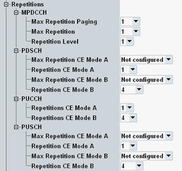

eMTC allows the repetition of control message and data transfers to enhance the coverage. The parameters in this section configure repetition settings for the individual channel types.
The settings are only available for the scheduling type "eMTC Auto Mode". The other scheduling types do not use repetitions.

The following settings configure the MPDCCH repetitions.
Maximum number of MPDCCH repetitions for paging.
The setting is signaled to the UE via the field "mpdcch-NumRepetition-Paging".
Remote command:Maximum number of MPDCCH repetitions.
The setting is signaled to the UE via the field "mpdcch-NumRepetition-r13".
Remote command:Repetition level for MPDCCH repetitions.
The allowed values depend on the setting "Max Repetition" (rmax), as listed in the following table.
The meaning of the repetition level depends on the setting "Search Space", see 3GPP TS 36.213, section 9.1.5 "MPDCCH assignment procedure".
Remote command:The following settings configure the PDSCH repetitions.
Maximum number of PDSCH repetitions for CE mode A.
The setting is signaled to the UE via the field "pdsch-maxNumRepetitionCEmodeA". "Not configured" means that the field is omitted.
Remote command:Number of PDSCH repetitions for CE mode A (repetition level).
The allowed values depend on the configured maximum repetitions, as listed in the following table.
Max repetitions | Repetitions |
|---|---|
Not configured | 1, 2, 4, 8 |
16 | 1, 4, 8, 16 |
32 | 1, 4, 16, 32 |
Maximum number of PDSCH repetitions for CE mode B.
The setting is signaled to the UE via the field "pdsch-maxNumRepetitionCEmodeB". "Not configured" means that the field is omitted.
Remote command:Number of PDSCH repetitions for CE mode B (repetition level).
The allowed values depend on the configured maximum repetitions, as listed in the following table.
Max repetitions | Repetitions |
|---|---|
Not configured | 4, 8, 16, 32, 64, 128, 256, 512 |
192 | 1, 4, 8, 16, 32, 64, 128, 192 |
256 | 4, 8, 16, 32, 64, 128, 192, 256 |
384 | 4, 16, 32, 64, 128, 192, 256, 384 |
512 | 4, 16, 64, 128, 192, 256, 384, 512 |
768 | 8, 32, 128, 192, 256, 384, 512, 768 |
1024 | 4, 8, 16, 64, 128, 256, 512, 1024 |
1536 | 4, 16, 64, 256, 512, 768, 1024, 1536 |
2048 | 4, 16, 64, 128, 256, 512, 1024, 2048 |
The following settings configure the PUCCH repetitions.
The settings are sent to the UE via the children of the field "pucch-NumRepetitionCE-r13".
Number of PUCCH repetitions for CE mode A.
Remote command:Number of PUCCH repetitions for CE mode B.
Remote command:The following settings configure the PUSCH repetitions.
Maximum number of PUSCH repetitions for CE mode A.
The setting is signaled to the UE via the field "pusch-maxNumRepetitionCEmodeA".
Remote command:Number of PUSCH repetitions for CE mode A (repetition level).
The allowed values depend on the configured maximum repetitions as for the PDSCH, see Table "Repetition values depending on max repetitions, mode A".
Remote command:Maximum number of PUSCH repetitions for CE mode B.
The setting is signaled to the UE via the field "pusch-maxNumRepetitionCEmodeB".
Remote command:Number of PUSCH repetitions for CE mode B (repetition level).
The allowed values depend on the configured maximum repetitions as for the PDSCH, see Table "Repetition values depending on max repetitions, mode B".
Remote command: